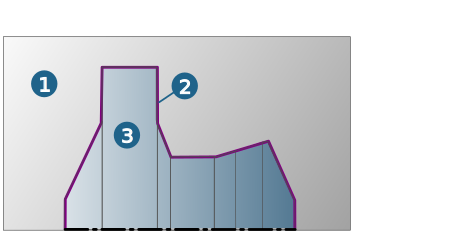

The Stock model dialog
General
Name/Comment: You only need to specify a name if the stock model is to be generated by extrusion or rotation. A descriptive comment can help you identify the stock model later.
Mode
In general, the following options are provided for generating stockmodels: Extrusion, Rotation, Surfaces, From job, File, Bounding geometry, From job chain.
Extrusion: Define a (closed) stockmodel based on a contour and a (positive/negative) offset. It can be used for a stock model calculation and for a stock model update.
Extrusion
Tolerance: Max. permissible distance (1) between the faceted surface of the polyhedron model and the real model surface.
 |
|
Profile: Select contour. |
|
 |
Offset 1 / Offset 2: Specify the height of the stock model in the Z direction (+/-). |
Mode
Rotation: Define a (closed) stock model based on an (open) contour between the start and end point by means of the rotation axis. It can be used for a stock model calculation and for a stock model update.
Rotation
Tolerance: Max. permissible distance (1) between the faceted surface of the polyhedron model and the real model surface.
|
 |
Profile: Select open contour. |
Resolution: Define the fineness of the curve resolution.
Mode
Surfaces: Define a stockmodel based on any selectable surfaces from a CAD model. The stockmodel cannot be used for a stockmodel update because it is not closed.
Surfaces
Tolerance: Max. permissible distance (1) between the faceted surface of the polyhedron model and the real model surface.
|
 |
Surfaces: Select surfaces manually. |
 |
Define surfaces with the help of the geometry filter. |
Mode
From Job: Define a stock model based on the closed stock model of a reference job (stock model update).
Close stockmodel
|
|
Close stock and generate a reference of a VIS file |
Following the surface selection, click the icon to use the stock for a stock model update. The stock model is closed and a corresponding VIS file is created. This function is also available in file mode. Select → and select the *.stl file that should be converted to *.vis format.
Automatic: A closed stock is created based on the selected surfaces. The stock remains closed even if the geometry is moved. The stock information is contained in the *.hmc file. It is not necessary to manually convert the geometry data (*.vis format).
Reference job
 |
Select reference job: Click the icon to select a reference job. The description of the selected reference job is used as the stockmodel name. |
Select mm or inch to specify the system of units.
Tolerance: Max. permissible distance (1) between the faceted surface of the polyhedron model and the real model surface.
|
Mode
File: Select any file in *.STL or *.VIS format. The description of the selected file is used as the stock model name.
If the file selected here is to be used for a stockmodel calculation, it has to be a closed solid.
The following applies to STL files that have been created using the Geometric Engine: If the file is to be used for stock definition, set the workplane to WCS before saving the file ( → ).
Mode
Bounding geometry: Define a stockmodel based on an existing CAD model. You can use either the profile of the CAD model, a box or cylinder as the basis for creating a stock model.
Bounding geometry
Profile: The profile of the active CAD model will be used as the bounding geometry. In this case, existing surfaces are rotated around the Z axis of the selected frame. You can define an offset (optional).
Box/Cylinder: A box/cylinder that is based on the outer boundary of the loaded model is created. Double-click the Allowance line to specify a freely definable offset.
In cubical stock models, the offset can be defined for the frame direction (+/-) X, Y and Z. In cylindrical stock models, the offset can be defined for the top, bottom and shell. When you define a cylindrical stock model, you can also specify the outer diameter and stock height.
Global offset: Select this option if the offset is to apply to the entire stockmodel.
Cast offset: Create a cast stock model based on the current CAD model.
|
|
Surfaces: Click the icon to select the surfaces or solid to be used as the basis for creating the cast stock model. If required, define an offset. |
Select frame: When creating a stockmodel, the frame of the joblist or job is used by default. You can also use another frame or define a new frame.
Calculate: Start the stockmodel calculation.
Tolerance: Max. permissible distance (1) between the faceted surface of the polyhedron model and the real model surface.
|
Once the calculation has been performed, the storage location ( Path), measurement system ( mm/ inch) and Resolutionare displayed in the File area. You can also change these. A corresponding entry is made in the stock browser and the cast stockmodel is available for further machining in all cycles that support stockmodels.
Cast stock models are always created in *.vis format.
Mode
Turning: Select this option if the stock model is to be used for Turning and define the stock model generation mode.
hyperMILL allows you to generate a stock model for turning jobs from a stock model for milling jobs and vice versa.
Rotation: Define a (closed) profile and turning axis either directly in the graphics window or from a milling stockmodel or an existing file.
|
Click the icon to open the Generate turning stock from milling stock dialogue. |
Options
Stock: Select a stockmodel.
File: Select any geometry file in *.omx or *.stl format and set the measurement system ( mm / inch).
Frame for turning axis: Select the frame for the turning axis. The Z axis of the selected frame corresponds to the turning axis of the turning stock. Define the resolution and an offset, if required.
Mode
From job: Define a stock model based on the stock model of a reference job.
Reference job
|
|
Select reference job: Click the icon to select a reference job. The description of the selected reference job is used as the stockmodel name. |
Bounding geometry: Use a bounding geometry to create a stockmodel for a turning job. You can select the following options:
Profile: The profile of the current polyhedron is used to generate a turning stock, while taking into account any defined offset.
Cylinder: While taking account of a defined offset, a cylindrical turning stock is created on the basis of the current polyhedron. After the calculation, the current stock size and minimum stock size are shown in the list display.
Pipe: While taking account of a defined offset, a pipe-shaped turning stock is created on the basis of the current polyhedron. After the calculation, the current stock size and minimum stock size are shown in the list display.
Global offset: Select this option if the offset is to apply to the entire stockmodel.
If not, specify the offset for the top, bottom, shell and inner shell. Define the inner shell diameter and outer shell diameter.
|  |
(1) Turning stock, (2) Turning contour, (3) Turning area
Mode
From job chain: Adapt the resolution for a stockmodel from a job chain.
Parameters
Define the start stockmodel, format and resolution of the resulting stockmodel.
Start stockmodel
File: Click Path to select any file in *.STL or *.VIS format. Use the Stock option to select an existing stockmodel from the list as a start stockmodel.
Resulting model
Select the STL (Stereo Lithography) or VIS (Visicut) option to specify the format of the resulting model and set the required resolution. Stock models in *.VIS format are recommended if you require greater accuracy.
Tolerance: Max. permissible distance (1) between the faceted surface of the polyhedron model and the real model surface.
|
History
Display information on the creation mode and resolution of the generated stockmodel in the Parameters and Job chain areas.